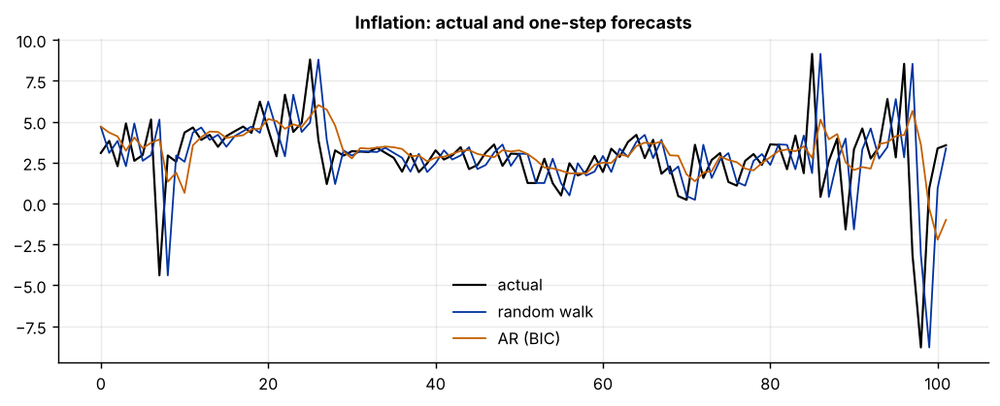
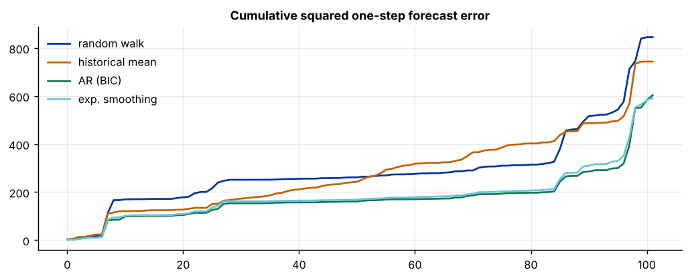

Step 1The question and the model
Does a model forecast inflation better than a random walk, and is the difference more than luck? Forecasts are produced at each date \(t\) using only the data up to \(t\) (an expanding window), \(h\) periods ahead. If \(e^{A}_{t+h}\) and \(e^{B}_{t+h}\) are the errors of two models and \(L\) is the loss (squared or absolute error), the loss differential is \(d_t = L(e^{A}_t) - L(e^{B}_t)\). The Diebold-Mariano test checks \(H_0: E[d_t]=0\):
where the long-run variance uses \(h-1\) autocovariances, because forecast errors \(h\) steps ahead are correlated up to lag \(h-1\). We use the small-sample correction of Harvey, Leybourne and Newbold and the \(t\) distribution.
| Model | Forecast |
|---|---|
| Random walk | the last observed value |
| Historical mean | the average of all data so far |
| AR (BIC) | an autoregression whose lag length is chosen by BIC at each date |
| Damped exponential smoothing | a damped-trend exponential smoothing model |
Before you test anything
- Use a benchmark that is hard to beat. For a persistent series a random walk is the usual benchmark; for a noisy series the historical mean may be better.
- Never use future data. Models must be estimated, and their lags selected, with data up to the forecast date only.
- Keep a long evaluation sample. With few forecasts the test has little power; the sample used here has about 100.
How to write it: methods sentence
We evaluate forecasts out of sample with an expanding window that starts with 100 quarters, and compare squared forecast errors with the Diebold-Mariano test, using the Harvey-Leybourne-Newbold correction. The benchmark is a random walk.
Step 2Load the data
import warnings; warnings.filterwarnings("ignore")
import numpy as np, pandas as pd
import matplotlib.pyplot as plt
from scipy import stats
from statsmodels.tsa.holtwinters import ExponentialSmoothing
d = pd.read_csv("us_macro.csv")
x = d["inflation"].to_numpy(float); n = len(x); w = 100
print(f"{n} quarters; the first forecast uses {w} quarters; mean {x.mean():.2f}, sd {x.std():.2f}")
print("first-order autocorrelation:", round(np.corrcoef(x[1:], x[:-1])[0, 1], 3))202 quarters; the first forecast uses 100 quarters; mean 3.98, sd 3.24 first-order autocorrelation: 0.645
How to read it
Inflation is persistent but noisy: the first-order autocorrelation is about 0.65. That is why a random walk is a poor forecaster for a noisy series (it passes all the noise into the forecast) and why a model that averages over the past can do better.
Step 3Step 1: Rolling forecasts without look-ahead
def ar_forecast(z, h, maxp=4):
best = None
for p in range(1, maxp + 1):
Y = z[p:]; X = np.column_stack([np.ones(len(Y))] + [z[p - j:len(z) - j] for j in range(1, p + 1)])
b = np.linalg.lstsq(X, Y, rcond=None)[0]; e = Y - X @ b
bic = np.log(e @ e / len(Y)) + (p + 1) * np.log(len(Y)) / len(Y)
if best is None or bic < best[0]: best = (bic, p, b)
_, p, b = best; hist = list(z[-p:][::-1])
for _ in range(h):
hist.insert(0, b[0] + sum(b[j + 1] * hist[j] for j in range(p)))
return hist[0]
def rolling(h):
fc = {k: [] for k in ["random walk", "historical mean", "AR (BIC)", "exp. smoothing"]}; act = []
for t in range(w, n - h + 1):
z = x[:t]; act.append(x[t + h - 1])
fc["random walk"].append(z[-1]); fc["historical mean"].append(z.mean()); fc["AR (BIC)"].append(ar_forecast(z, h))
fc["exp. smoothing"].append(ExponentialSmoothing(z, trend="add", damped_trend=True).fit().forecast(h)[-1])
return np.array(act), {k: np.array(v) for k, v in fc.items()}
act1, fc1 = rolling(1)
print(len(act1), "one-step-ahead forecasts")
fig, ax = plt.subplots(figsize=(8, 3.3)); ax.plot(act1, color="k", lw=1.2, label="actual")
for k in ("random walk", "AR (BIC)"): ax.plot(fc1[k], lw=1, label=k)
ax.legend(frameon=False); ax.set_title("Inflation: actual and one-step forecasts"); plt.tight_layout(); plt.show()102 one-step-ahead forecasts

How to read it
The random-walk forecast is the actual series delayed by one quarter, so it is as noisy as the data; the AR forecast is smoother and tracks the level without chasing every spike. The forecasts for the 102 quarters after 100 quarters of estimation are never based on data from the future.
Step 4Step 2: Accuracy and the Diebold-Mariano test
def dm(dl, h):
T = len(dl); m = dl.mean(); lam = ((dl - m) @ (dl - m)) / T
for j in range(1, h): lam += 2 * ((dl[j:] - m) @ (dl[:-j] - m)) / T
s = m / np.sqrt(lam / T) * np.sqrt((T + 1 - 2 * h + h * (h - 1) / T) / T)
return s, 2 * stats.t.sf(abs(s), T - 1)
def table(act, fc, h, bench="random walk"):
err = {k: act - v for k, v in fc.items()}; rows = []
for k in fc:
rmse = np.sqrt((err[k] ** 2).mean()); rel = rmse / np.sqrt((err[bench] ** 2).mean())
s, p = (np.nan, np.nan) if k == bench else dm(err[bench] ** 2 - err[k] ** 2, h)
rows.append([k, round(rmse, 3), round(np.abs(err[k]).mean(), 3), round(rel, 3), round(s, 3), round(p, 4)])
return pd.DataFrame(rows, columns=["model", "RMSE", "MAE", "RMSE / benchmark", "DM stat", "p-value"])
print("One quarter ahead (benchmark: random walk)"); print(table(act1, fc1, 1).to_string(index=False))One quarter ahead (benchmark: random walk)
model RMSE MAE RMSE / benchmark DM stat p-value
random walk 2.879 1.829 1.000 NaN NaN
historical mean 2.701 1.993 0.938 0.489 0.6256
AR (BIC) 2.433 1.460 0.845 1.274 0.2055
exp. smoothing 2.406 1.512 0.836 1.615 0.1094How to read it
All three models have a lower root mean squared error than the random walk (2.88): 2.70 for the historical mean, 2.43 for the AR and 2.41 for the smoothing model, which is a gain of about 16% for the last two. But none of the differences is significant at 5% (p-values 0.63, 0.21 and 0.11). With about 100 forecasts and noisy errors, a gain of this size cannot be told from chance. The finding to report is that the data are consistent with an improvement, and not that the AR model is better.
Step 5Step 3: The answer depends on the horizon
act4, fc4 = rolling(4)
print("Four quarters ahead (benchmark: random walk)"); print(table(act4, fc4, 4).to_string(index=False))Four quarters ahead (benchmark: random walk)
model RMSE MAE RMSE / benchmark DM stat p-value
random walk 3.160 2.011 1.000 NaN NaN
historical mean 2.739 2.023 0.867 1.270 0.2069
AR (BIC) 2.529 1.600 0.800 2.488 0.0145
exp. smoothing 2.543 1.609 0.805 2.512 0.0136How to read it
Four quarters ahead the random walk does worse (RMSE 3.16) and the AR and smoothing models are significantly better (relative RMSE 0.80, p = 0.015 and 0.014). The gain from averaging over the past grows with the horizon, since the noise in the last observation matters more. The historical mean does not beat the random walk significantly (p = 0.21). A paper that reports one horizon only can give a misleading picture, so report several.
Step 6Step 4: Cumulative errors over time
err = {k: act1 - v for k, v in fc1.items()}
fig, ax = plt.subplots(figsize=(8, 3.3))
for k in fc1: ax.plot(np.cumsum(err[k] ** 2), label=k)
ax.legend(frameon=False); ax.set_title("Cumulative squared one-step forecast error"); plt.tight_layout(); plt.show()
print("Share of the random walk's squared error accumulated in the final third:", round(float((err['random walk'][-34:] ** 2).sum() / (err['random walk'] ** 2).sum()), 2))Share of the random walk's squared error accumulated in the final third: 0.66

How to read it
A model that is good on average can be good only in some periods. If the lines separate in a few quarters (for example during the 2008 crisis) and run parallel for the rest, the gain comes from those episodes. Here, 66% of the random walk's total squared error falls in the last third of the forecasts, which includes the 2008 crisis, so the large errors are concentrated in a short period. Plot the cumulative error, and check that the gain does not come from a few observations.
Step 7What to report in the paper
Report the benchmark, the estimation scheme (expanding or rolling window and its starting size), the number of forecasts, the loss function, the RMSE of each model relative to the benchmark, the test, and the horizons. Say if the data are revised values or real-time vintages.
How to write it: results
Table 4 reports out-of-sample forecasts of inflation. One quarter ahead, an autoregression and a damped exponential-smoothing model reduce the root mean squared error by about 16% relative to a random walk, but the differences are not significant (Diebold-Mariano p = 0.21 and 0.11). Four quarters ahead, the reduction is 20% and is significant at the 5% level (p = 0.015 and 0.014).
Step 8Common mistakes
Mistakes to avoid
- Using in-sample fit as evidence of forecasting. A model with more parameters always fits better in sample.
- Look-ahead. Estimating the model or choosing the lags on the full sample before forecasting.
- No benchmark. An RMSE without a benchmark has no meaning.
- Not correcting for the horizon. For \(h>1\) the errors are autocorrelated; use \(h-1\) autocovariances in the long-run variance.
- Using Diebold-Mariano for nested models. The distribution is not standard; use the Clark-West test.
- Too few forecasts. The test has little power below about 50 forecasts.
- Reporting one horizon. The ranking of the models changes with the horizon.
- Ignoring data revisions. Forecast comparisons with revised data can differ from real-time ones.